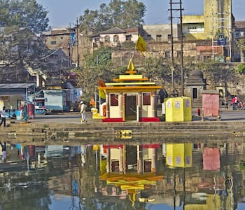
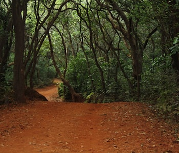
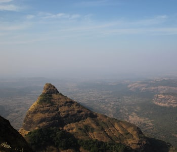
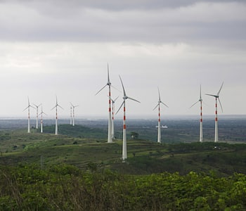
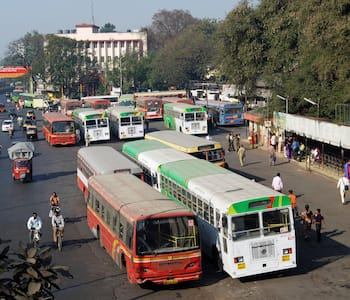

A STATE GUIDE TO MAHARASHTRA
|
Maharashtra Info
|
| Currency |
Indian Rupee |
| Population |
114.2 million |
| Time Zone |
GMT+5.30 hours |
| Area |
307713 km2 |
| Capital |
Mumbai |
| Official Language |
Marathi |
| Capital's Calling Code |
+91-22 |
-
Nashik

- A city where one gets intoxicated by spirituality and wine, where one is mesmerized by the green
pastures and the mountains and where history meets mythology, is Nashik! This Indian city is located
in the northern part of the state of Maharashtra. The city is one of the important centers of
devotionfor Hindus, notably for the Kumbh Mela, conducted once in 12 years.The city has many destinations
like the Panchvati, part of Jungle where Lord Ram from the epic Ramayana resided during his exile
and Ramkund, where he bathed. Other sites include temples with intricate art and devotional stories,
like Mukti Dham Temple and Kalaram Temple. On the outskirts lies the Trimbakeshwar Temple, one of the 12
Jyotirlings of Hindu Lord Shiva. The Coin Museum is a great place for history lovers, as it houses
the drawings and inscriptions on coins of various empires and rulers. The Sula Vineyards boasts of being
the producers of the best-tasting wines in India and offer tours of the wine yard. Unlike Pune and
Mumbai,which have developed but their vintage charm has diminished, Nashik is developing as an urban city
with the old-world charm intact.Nashik is the third largest city of Maharashtra after Mumbai & Pune.
Nashik lies in the northern part of Maharashtra state at 700 m (2,300 ft) from the mean sea level
which gives it ideal temperature variation, particularly in winters. Nashik lies at altitude of 700m
above sea level and has lush mountainous terrain. The river Godavari originates from the Brahmagiri
Mountain, Trimbakeshwar about 24 km (15 mi) from Nashik and flows through the old residential
settlement, now in the central part of the city. Due to high pollution created by factories in
proximity of the city the river was dying at an alarming rate. It has since been successfully
cleaned. Other than Godavari, important rivers like Vaitarana, Bhima, Girana, Kashyapi and Darana
flow across Nashik. Nashik lies on the western edge of the Deccan Plateau which is a volcanic
formation. Trimbakeshwar is about 30 km (19 mi) from the city, it is where from river Godavari
originates. The land area of the city is about 259.13 km2 (100.05 sq mi). Anjaneri near Nashik is
the birth place of lord Hanuman. The city’s tropical location and high altitude combine to give it a
relatively mild version of a tropical wet and dry climate.Temperatures rise slightly in October, but
this is followed by the cool season from November to February. The cool season sees warm
temperatures of around 28 °C during the day, but cool nights, with lows averaging 10 °C, and
extremely dry air.
Matheran

A place without the chaos of traffic, the monotony of concrete jungle and the ever increasing threat and
side effects of global warming to human beings, is the ‘Jungle on top,'- Matheran. It is located in the
Raigad District of Maharashtra and known as the smallest hill station; it is an automobile-free zone to
preserve the sensitive ecosystem at this hill town. The transport mediums here other than walking are
horse rides, hand-driven carts or the small toy train slowly maneuvering its way across the valleys and
scenic locations. The slow pace of life here enables you to pay attention to the minute details which
most people have forgotten in today’s fast-paced lives.The breathtaking 38 look out points
designated at Matheran are each abundant with natural beauty. There is also a panorama view that gives a
complete 360° view of scenery with a splendid view of sunrise and sunset and the habitation of Neral
town. Adventure seekers can try valley crossing by a zip line ride and enjoy the views along with
adrenaline rush. Charlotte Lake, Monkey point, Heart point, Echo point and One Tree Hill are among the
famous viewpoints here. A happy heart and refreshed mind are the best memoirs of this place to take back
home.Matheran is a hill station, near Mumbai, in the west Indian state of Maharashtra. It’s known for its
mild climate and well-preserved colonial architecture. Motor vehicles are banned and many visitors arrive by
narrow-gauge railway on the 1907 Neral–Matheran Toy Train. The Panorama Point lookout offers views across
the mountains of the Western Ghats. Louisa Point has views of waterfalls and the ancient Prabal Fort
Though Matheran has a pleasant climate throughout the year, the best time to visit is between October and
May. Here's a seasonal breakup of the year so you can plan your trip accordingly. October to November: This
is when the monsoon has just retreated and the temperature is cool and perfect for sightseeing.If you are
looking for activities to do in Matheran, one of the most thrilling is waterfall rappelling at Dodhani
Waterfalls. Whether you are an experienced thrill seeker or an amateur, you will love the experience of
descending from a slope or rock with water rushing around you. While the providers of this recreational
activity use high-quality ropes as well as the necessary devices like descenders, seat harnesses, helmets,
gloves, etc., this is an experience of a lifetime you must try when in a trip to Matheran. If you are not
much of an adventure seeker then visit the Dodhani Waterfalls just to spend time with nature and yourself.
These waterfalls are one of the most beautiful things to see in Matheran. .
Lonavala

Away from the crowd of the bustling metropolitan cities of Mumbai and Pune, Lonavala offers a much-needed
retreat to city dwellers. Lush green Sahyadri Hills, incessant waterfalls, and beautiful lakes will make you
fall in love with this town. No wonder that scores of Bollywood films have used this spectacular hill
station as a backdrop. The picturesque landscape has inspired the likes of artists, explorers, and even
honeymooners. This town is located in Maharashtra, at just 64 km from Pune and 96 km from Mumbai, making it
one of the most popular destinations in the state. You can also make a visit to the nearby hill station of
Khandala, which is equally beautiful and exciting.Some people call it ‘Jewel of Sahyadri’ for its serene
valleys or mountains, while others call it ‘City of Caves’ for its numerous caves such as Bhaja, Karla, and
Bedsa. As you roam around munching ‘chikki’, a traditional candy, you cannot help but feel relaxed and
rejuvenated. If you are intrigued by historical places, you can visit Rajmachi Point, which provides you
with a stunning view of the fort of the mighty Chattrapati Shivaji. Adventure enthusiasts can hike to Duke’s
Nose or Tiger’s Leap.Lonavala is one of the twin hill stations located near to each other, the other being
Khandala. These hill stations are very popular getaway spots for people from Mumbai and Pune, which are very
well-linked with Lonavala by road and rail. Monsoons are the best time to visit Lonavala/Khandala.Surrounded
by dense forests, waterfalls, and dam alongside lakes, it is a must-visit if you admire nature. Located at
an elevation of 624 m above sea level, Lonavala is one of the twin hill stations - Lonavala and Khandala
(these two can be easily visited together). The popular tourist attractions in Lonavala are Bhaja caves,
Bushi dam, Karla caves, Rajmachi fort, Ryewood lake, among others. Lonavala is also popular for the treks
like the Andharban trek that starts from a village called Pimpri and ends in Bhira.
Lonavala is famous for its production of the hard candy chikki which is a sweet eatable thing made from
different nuts mixed with jaggery. It is also a major stop on the railway line which connects Mumbai and
Pune
Ahmednagar

Ahmednagar situated in the state of Maharashtra is a small city about 120 km from Pune and 300 km from
Mumbai. Although the town does not boast about its large area-per-sq-meter numbers, it makes up for that
through its deep-rooted history, magnificent monuments and charming temples, which are also some of the
places that are a must-visit in Ahmednagar. The small city that is bordered by the scenic river Sina, is
home to people of various religions who live in utmost harmony. A popular place for both Maharashtrian and
Muslim cuisines, Ahmednagar is famous for its numerous lip-smacking street food joints that are also touted
to be one of the main attractions in Ahmednagar. Among the many places to visit in Ahmednagar, sprawling
palaces, historically significant tombs, the famous Ahmednagar Fort and intricately carved temples are a
favourite with tourists and locals alike. A lot of people visit Ahmednagar for trade-related work, if you do
too make sure to take out some time and take a trip around the city that has a lot to offer.Once known as
the as the second-most impregnable fort (the first one being the Gwalior Fort), Ahmednagar Fort was the main
headquarters of Ahmednagar Sultanate. Malik Ahmad Nizam Shah I, the first sultan of the Nizam Shahi dynasty,
ordered to built this fort so to protect his city against the invaders. Unique features of the fort like 18m
high walls supported by 22 bastions; one large gate; three small sally ports; glacis; no covered way and a
ditch revetted with stone set it to look apart from other forts of India. History has it that Chand Bibi, a
regent of the Shahi dynasty, successfully defended the fort from the Mughals many times. But Mughals were
somehow able to conquer it. Adding to its historical significance is the fact that Aurangzeb died here in
1707. After Aurangzeb's death, the fort passed to the Nizams in 1724, Marathas in 1759 and later the
Scindias in 1790. In 1803, Ahmednagar fort was taken over by British during the Second Anglo-Maratha War.
During the days of Quit India movement, Britons made a prison in the fort. Various diplomats of Indian
National Congress like Jawaharlal Nehru, Abul Kalam Azad, Sardar Patel, etc have been detained in this fort.
Currently, the fort is the administration of the Armoured Corps of the Indian Army.
Pune

The erstwhile stronghold of the mighty Maratha empire, Pune epitomizes the rapid development and the
changing face of India. The center of business, IT, automobile, research, and education industries, it is a
cosmopolitan city with a tinge of the old. The city boasts of providing a high quality of living to its
residents, with swanky malls, international restaurants, and every other amenity an urban Indian can think
of. At the same time, it is a torchbearer of the zestful Marathi culture. The celebration of Ganapati
Festival in the city is something one must experience.Tourist attractions in Pune stand as a grand testimony
of its glorious past of the city, and each conveys its own story. Having witnessed major battles, the city
has endured the test of time. Aga Khan Palace is a marvel of architecture and Yerwada Central Jail once
housed freedom fighters like Mahatma Gandhi and Veer Savarkar. Shaniwar Wada was the residence of the
valiant Peshwa Baji Rao. Raja Dinkar Kelkar Museum takes you through the timeline of Indian history. If you
are fascinated with the beauty of nature, you can visit Rajiv Gandhi Zoological Park, home to several
species of fauna. The zoo even has a unique snake park.Historical attractions include the 8th century
rock-cut Pataleshwar cave temple, the 18th century Shaniwarwada, the 19th century Aga Khan Palace, Lal Mahal
and Sinhagad fort. Shinde Chhatri, located at Wanowrie, is a memorial dedicated to the great Maratha
general, Mahadaji Shinde (Scindia).[153] The old city had many residential buildings with courtyards called
Wada. However, many of these have been demolished and replaced by modern buildings.
A renowned wada in Pune is the last residential palace of the Peshwa called Vishrambaug Wada which is
currently being renovated by the city corporation.[154] The city is also known for its British Raj bungalow
architecture and the Garden Cities Movement layout of the Cantonment from the early 20th century. Landmark
architectural works by Christopher Charles Benninger surround the city, including the Mahindra United World
College of India, the Centre for Development Studies and Activities, the YMCA Retreat at Nilshi and the
Samundra Institute of Maritime Studies.